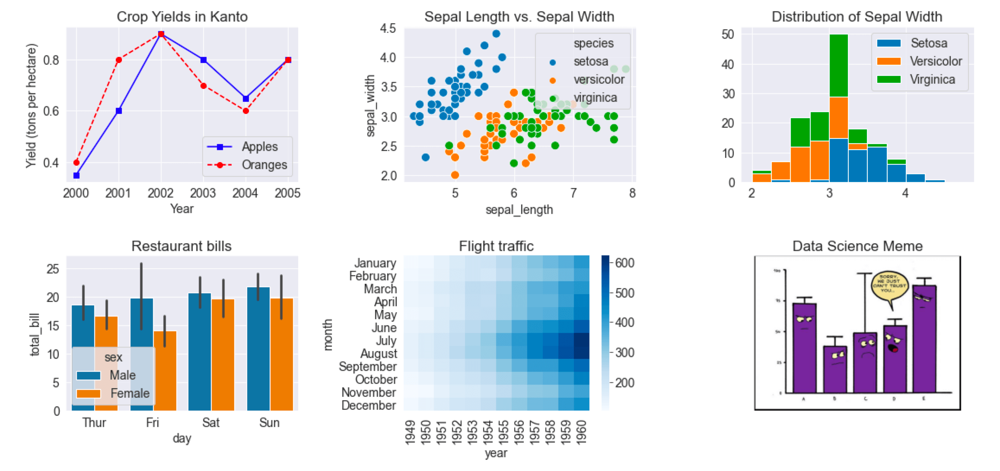
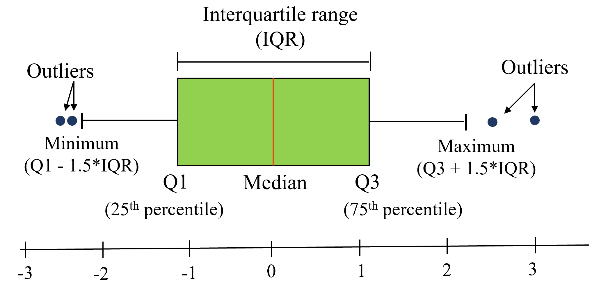

11 Data Visualization Fundamentals
One picture is worth a thousand words
- Fred R. Barnard
Visual perception offers the highest bandwidth channel, as we acquire much more information through visual perception than with all of the other channels combined, as billions of our neurons are dedicated to this task. Moreover, the processing of visual information is, at its first stages, a highly parallel process. Thus, it is generally easier for humans to comprehend information with plots, diagrams and pictures, rather than with text and numbers. This makes data visualizations a vital part of data science. Some of the key purposes of data visualization are:
- Data visualization is the first step towards exploratory data analysis (EDA), which reveals trends, patterns, insights, or even irregularities in data.
- Data visualization can help explain the workings of complex mathematical models.
- Data visualization are an elegant way to summarise the findings of a data analysis project.
- Data visualizations (especially interactive ones such as those on Tableau) may be the end-product of data analytics project, where the stakeholders make decisions based on the visualizations.
11.1 Learning Objectives
By the end of this chapter, you will be able to:
- Understand the fundamental principles of effective data visualization
- Classify data types and choose appropriate visualization methods
- Create basic plots using Pandas’ built-in plotting capabilities
- Customize sophisticated visualizations with Matplotlib’s pyplot interface
- Design publication-quality statistical plots using Seaborn
- Apply best practices for visual storytelling with data
- Compare different visualization libraries and their use cases
11.2 The Art of Visualization: Choosing the Right Plot Type
There are various types of plots available, and selecting the appropriate one is crucial for successful data visualization. The choice primarily depends on two factors:
- The type of data you are working with, and
- The role of visualization in your data analysis
11.2.1 Data Classification for Visualization
Data visualization is commonly used to plot data in a pandas DataFrame. The data can be classified into two categories:
Numeric Data: This type of data represents quantities and can take any value within a range. Common examples include age, height, temperature, etc.
Categorical Data: This type of data represents distinct categories or groups. It can be nominal (no inherent order, like colors or names) or ordinal (with a defined order, like ratings).
11.2.2 The Role of Visualization in Data Analysis
Data visualization is essential for effectively communicating insights derived from data analysis. By using various visualization techniques, we can uncover patterns, and understand relationships. Below, we discuss different types of data exploration and the relevant visualizations used for each.
11.2.2.1 Univariate Exploration
Purpose: Univariate exploration analyzes a single variable to understand its distribution, central tendency, and spread.
11.2.2.1.1 Common Visualizations:
- Histograms: Display the frequency distribution of a numeric variable, helping to identify the shape of the data (e.g., normal, skewed).
- Box Plots: Summarize key statistics of a variable, including median, quartiles, and potential outliers.
- Bar Plots: Show the count or proportion of categorical variables, revealing the frequency of each category.
- Line Plots: Used to display trends in numeric data over time, helping to visualize changes in a variable.
11.2.2.1.2 Insights Gained:
- Identify outliers and anomalies.
- Understand the range and distribution of values.
- Determine central tendency (mean, median, mode).
11.2.2.2 Bivariate Analysis
Purpose: Bivariate analysis examines the relationship between two variables, helping to understand how changes in one variable might affect another.
11.2.2.2.1 Common Visualizations:
- Scatter Plots: Illustrate the relationship between two numeric variables, highlighting trends and correlations.
- Grouped Bar Plots: Compare categorical variables against a numeric variable, revealing trends across categories.
- Heatmaps: Represent correlation coefficients between pairs of variables, allowing easy identification of strong correlations.
11.2.2.2.2 Insights Gained:
- Assess the strength and direction of relationships (positive, negative, or no correlation).
- Identify potential predictive relationships for further analysis.
- Discover patterns that may indicate causal relationships.
11.2.2.3 Multivariate Analysis
Purpose: Multivariate analysis investigates more than two variables simultaneously, providing a comprehensive view of complex relationships and interactions.
11.2.2.3.1 Common Visualizations:
- Pair Plots: Show pairwise relationships in a dataset, facilitating quick insights into correlations among multiple variables.
- 3D Scatter Plots: Visualize the interaction between three numeric variables in a three-dimensional space.
- Facet Grids: Display multiple plots for different subsets of data, enabling comparisons across categories.
11.2.2.3.2 Insights Gained:
- Understand interactions and dependencies among multiple variables.
- Identify clusters or groups within the data.
- Enhance predictive modeling by considering multiple influences.
11.2.3 Quick Reference: Data Types and Visualization Mapping
| Data Type | Examples | Best Visualizations |
|---|---|---|
| Single Numeric | Age, Temperature, Price | Histogram, Box Plot, Density Plot |
| Single Categorical | Gender, Region, Product Type | Bar Chart, Pie Chart, Count Plot |
| Time Series | Stock prices, Daily sales | Line Plot, Area Chart |
| Two Numeric | Height vs Weight, Price vs Sales | Scatter Plot, Regression Plot |
| Numeric + Categorical | Sales by Region, Age by Gender | Grouped Bar, Box Plot, Violin Plot |
| Two Categorical | Gender vs Product Preference | Stacked Bar, Grouped Bar, Heatmap |
| Three+ Variables | Multiple dimensions | Pair Plot, Facet Grid, 3D Scatter |
| Correlations | Feature relationships | Correlation Matrix, Heatmap |
Choosing the appropriate plot depends on the data type and the specific analysis purpose. Numeric data typically requires plots that can handle continuous data (like line plots or histograms), while categorical data often benefits from comparisons (like bar plots or pie charts). Always consider what story you want to tell with your data and select your visualization method accordingly.
11.3 Visualization Tools: The Python Ecosystem
Python offers a rich ecosystem of visualization libraries, each designed for specific purposes. In this course, we’ll focus on three fundamental libraries that form the foundation of data visualization in Python.
11.3.1 The Three-Library Approach
1. Pandas - Quick Exploratory Plots - Built-in .plot() method for DataFrames - Perfect for rapid data exploration - Minimal code required
2. Matplotlib - Complete Control - Low-level plotting library - Maximum customization capability - Foundation for other libraries
3. Seaborn - Statistical Beauty - High-level interface built on Matplotlib - Specialized for statistical visualization - Beautiful defaults out of the box
11.3.2 Why These Three?
| Feature | Benefit |
|---|---|
| Complementary | Each library excels at different tasks |
| Integrated | They work seamlessly together |
| Industry Standard | Most widely used in data science |
| Well-Documented | Extensive resources and community support |
| Progressive Learning | Start simple (Pandas) → Advanced (Matplotlib/Seaborn) |
11.3.3 Library Comparison at a Glance
Pandas Plot
├─ Pros: Fastest to write, DataFrame-native
└─ Cons: Limited customization, basic styling
Matplotlib
├─ Pros: Complete control, publication-quality
└─ Cons: Verbose syntax, requires more code
Seaborn
├─ Pros: Beautiful defaults, statistical functions
└─ Cons: Less control than Matplotlib, opinionated11.3.4 Step 1: Import Libraries
Let’s start by importing all three libraries with their standard aliases:
import pandas as pd
import matplotlib
import matplotlib.pyplot as plt
import seaborn as sns
# We'll also import numpy for numerical operations
import numpy as np
print("✓ Visualization libraries imported and configured successfully!")
print(f" - Pandas version: {pd.__version__}")
print(f" - Matplotlib version: {matplotlib.__version__}")
print(f" - Seaborn version: {sns.__version__}")
print(f" - NumPy version: {np.__version__}")✓ Visualization libraries imported and configured successfully!
- Pandas version: 2.2.2
- Matplotlib version: 3.8.4
- Seaborn version: 0.13.2
- NumPy version: 1.26.411.3.5 Step 2: Understanding the Imports
Let’s understand what each import does:
import pandas as pd - Imports the pandas library for data manipulation - Provides the .plot() method on DataFrames - pd is the universally recognized alias
import matplotlib.pyplot as plt - Imports matplotlib’s pyplot module for plotting - pyplot provides MATLAB-like interface for creating plots - plt is the standard alias used in all documentation
import seaborn as sns - Imports seaborn for statistical visualizations - Built on top of matplotlib with enhanced styling - sns alias comes from the TV show The West Wing
import numpy as np - Not a visualization library, but essential for: - Generating sample data for demonstrations - Performing numerical calculations - Creating arrays for plotting
11.3.6 Step 3: Configure Your Environment
Now let’s set up optimal defaults for our visualization environment:
# Configure matplotlib for better display in Jupyter
%matplotlib inline
# Set default figure size for all plots (width, height in inches)
import matplotlib
matplotlib.rcParams['figure.figsize'] = (8, 5) # Larger default size
matplotlib.rcParams['figure.dpi'] = 100 # Resolution
matplotlib.rcParams['font.size'] = 11 # Default font size
# Configure Seaborn style
sns.set_style("whitegrid") # Clean grid background
sns.set_palette("deep") # Colorblind-friendly palette
sns.set_context("notebook") # Appropriate scaling11.3.7 Step 4: Understanding the Configuration
Let’s break down what each configuration does:
11.3.7.1 Matplotlib Configuration
%matplotlib inline (Jupyter Magic Command)
- Displays plots directly in the notebook
- Without this, plots may not appear or open in separate windows
- Only needed once per notebook session
figure.figsize - Default Plot Dimensions
- Format:
(width, height)in inches - Default is
(6.4, 4.8)- often too small - We set
(10, 6)for better visibility - Can be overridden for individual plots
figure.dpi - Dots Per Inch (Resolution)
- Controls image quality and sharpness
- Default: 72 DPI (screen display)
- We set 100 DPI for crisper display
- Use 300 DPI for publication-quality exports
font.size - Text Size
- Default: 10 points
- We set 11 for better readability
- Affects all text: labels, titles, legends
11.3.7.2 Seaborn Configuration
set_style("whitegrid") - Visual Theme
- Options:
darkgrid,whitegrid,dark,white,ticks whitegrid: Clean white background with subtle grid- Professional appearance suitable for presentations
set_palette("deep") - Color Scheme
- Options:
deep,muted,pastel,colorblind, etc. deep: Saturated colors with good contrast- Automatically applied to Seaborn plots
set_context("notebook") - Scaling Preset
- Options:
paper,notebook,talk,poster - Controls relative size of elements
notebook: Optimal for Jupyter display- Use
talkfor presentations,posterfor large displays
11.3.8 Step 5: Verify Your Setup
Let’s create a quick test to confirm everything is working correctly:
# Quick test plot to verify configuration
fig, axes = plt.subplots(1, 3, figsize=(15, 4))
# Test 1: Pandas plot
test_data = pd.DataFrame({
'x': range(10),
'y': np.random.randn(10).cumsum()
})
test_data.plot(x='x', y='y', ax=axes[0], title='Pandas Plot', legend=False)
axes[0].set_ylabel('Value')
# Test 2: Matplotlib plot
axes[1].set_title('Matplotlib Plot')
axes[1].set_xlabel('X axis')
axes[1].set_ylabel('Y axis')
axes[1].grid(True, alpha=0.3)
# Test 3: Seaborn plot
test_df = pd.DataFrame({
'category': ['A', 'B', 'C', 'D', 'E'],
'values': np.random.randint(10, 50, 5)
})
sns.barplot(data=test_df, x='category', y='values', ax=axes[2])
axes[2].set_title('Seaborn Plot')
plt.tight_layout()
plt.suptitle('All Three Libraries Working!', fontsize=14, y=1.02)
plt.show()
print("\n✓ All libraries are working correctly!")
print(" You're ready to start creating visualizations!")
✓ All libraries are working correctly!
You're ready to start creating visualizations!11.3.9 Step 6: Pro Tips for Working with These Libraries
Now that everything is set up, here are some professional tips for effective visualization:
11.3.9.1 Layer Your Learning
Start simple and progressively add complexity:
- Begin: Use Pandas
.plot()for quick data exploration - Enhance: Add Matplotlib customization for specific needs
- Refine: Use Seaborn for statistical visualizations
- Combine: Mix all three in complex projects
11.3.9.2 Common Workflow Pattern
Here’s a typical pattern that combines all three libraries:
# Step 1: Create base plot with Seaborn (easy syntax + beautiful defaults)
sns.scatterplot(data=df, x='var1', y='var2', hue='category')
# Step 2: Customize with Matplotlib (fine-grained control)
plt.title('My Custom Title', fontsize=14, fontweight='bold')
plt.xlabel('Custom X Label')
plt.axhline(y=0, color='red', linestyle='--', alpha=0.5)
# Step 3: Display
plt.show()11.3.9.3 Troubleshooting Quick Reference
| Problem | Solution |
|---|---|
| Plots not showing | Add plt.show() or verify %matplotlib inline is set |
| Plots overlapping | Use plt.figure() before each new plot or plt.clf() to clear |
| Text too small | Increase font.size in rcParams or use fontsize parameter |
| Poor image quality | Save with higher DPI: plt.savefig('plot.png', dpi=300) |
| Colors hard to distinguish | Use colorblind-friendly palette: sns.set_palette("colorblind") |
| Legend outside plot area | Adjust with bbox_inches='tight' when saving |
11.3.9.4 Performance Tips for Large Datasets
When working with datasets >100K points:
- Sampling: Plot a representative random subset
- Aggregation: Group/bin data before plotting
- Rasterization: Use
rasterized=Truein scatter plots - Alternative libraries: Consider Plotly or Bokeh for interactive visualizations
11.3.9.5 Saving High-Quality Plots
Professional way to save your visualizations:
plt.savefig('my_plot.png',
dpi=300, # Publication quality (300 DPI)
bbox_inches='tight', # Remove extra whitespace
facecolor='white', # Ensure white background
edgecolor='none', # No border
transparent=False) # Solid background11.3.10 You’re Ready!
Your visualization environment is now fully configured and tested. In the following sections, we’ll explore each library in detail, starting with Pandas for quick exploratory analysis.
11.4 Basic Plotting with Pandas
In previous chapters, we focused on using pandas for data reading and analysis. In addition to its powerful data manipulation capabilities, pandas also provides built-in plotting tools that make it especially valuable for:
- Rapid Exploration - Create plots with minimal code
- Seamless Integration - No data conversion needed
- Quick Insights - Perfect for initial data investigation
- Iterative Analysis - Easy to modify and regenerate
The Power of .plot(): Pandas’ .plot() method is your Swiss Army knife for quick visualizations. It’s built on Matplotlib but provides a simpler, DataFrame-centric interface.
11.4.1 📂 Dataset: COVID-19 Cases
In this section, we’ll use real COVID-19 data to demonstrate practical plotting techniques. This dataset contains time series information about new cases and deaths, making it ideal for learning data visualization.
covid_df = pd.read_csv('./Datasets/covid.csv')
covid_df.head(5)| date | new_cases | total_cases | new_deaths | total_deaths | new_tests | total_tests | cases_per_million | deaths_per_million | tests_per_million | |
|---|---|---|---|---|---|---|---|---|---|---|
| 0 | 2019-12-31 | 0.0 | 0.0 | 0.0 | 0.0 | NaN | NaN | 0.0 | 0.0 | NaN |
| 1 | 2020-01-01 | 0.0 | 0.0 | 0.0 | 0.0 | NaN | NaN | 0.0 | 0.0 | NaN |
| 2 | 2020-01-02 | 0.0 | 0.0 | 0.0 | 0.0 | NaN | NaN | 0.0 | 0.0 | NaN |
| 3 | 2020-01-03 | 0.0 | 0.0 | 0.0 | 0.0 | NaN | NaN | 0.0 | 0.0 | NaN |
| 4 | 2020-01-04 | 0.0 | 0.0 | 0.0 | 0.0 | NaN | NaN | 0.0 | 0.0 | NaN |
11.4.2 Step 1: Your First Pandas Plot
Let’s start with the simplest possible plot - visualizing a single variable.
Concept: Line Plots for Time Series Line plots are ideal for showing changes over continuous data, such as the progression of new cases over a series of dates.
The Simplest Plot: With pandas, creating a plot is as easy as calling .plot() on a Series or DataFrame:
covid_df.new_cases.plot()
Problem Identified: 🤔
While this plot shows the overall trend, it’s hard to tell when the peak occurred - the X-axis shows indices (0, 1, 2…) instead of dates!
Solution: Set the Date as Index
Since this is a time series dataset, we can use the date column as the DataFrame index. This tells pandas to use actual dates on the X-axis:
covid_df.set_index('date', inplace=True)covid_df.new_cases.plot(rot=45);
Much Better!
Now we can clearly see that the peak occurred around March 2020. The rot=45 parameter rotates the X-axis labels 45 degrees for better readability.
Key Insight: When working with time series data, always set the date/time column as the index for automatic, proper time-axis formatting.
11.4.3 Step 2: Plotting Multiple Variables
Now that we have one variable plotted, let’s compare multiple variables on the same plot to see relationships.
Goal: Compare new cases and new deaths trends over time
How: Simply pass a list of column names to the DataFrame:
covid_df[['new_deaths', 'new_cases']].plot();
What Happened?
Pandas automatically:
- Created two lines (one per column)
- Assigned different colors to each line
- Generated a legend with column names
- Used the index (dates) for the X-axis
11.4.4 Step 3: Customizing Your Plots
By default, pandas generates line plots using the .plot() method. However, you can adjust several parameters to enhance the appearance:
Common Customization Parameters:
| Parameter | Purpose | Example |
|---|---|---|
figsize |
Set figure dimensions (width, height) in inches | figsize=(12, 6) |
linewidth or lw |
Control line thickness | linewidth=2 |
marker |
Add data point markers | marker='o' |
color |
Set line color(s) | color='red' or color=['red', 'blue'] |
alpha |
Set transparency (0=transparent, 1=opaque) | alpha=0.7 |
rot |
Rotate X-axis labels | rot=45 |
grid |
Show/hide gridlines | grid=True |
title |
Add plot title | title='My Plot' |
Let’s enhance our plot:
covid_df[['new_deaths', 'new_cases']].plot(figsize=(12, 6), linewidth=2, marker='o');
Result: The plot is now larger, has thicker lines, and shows markers at each data point - much easier to read!
11.4.5 Step 4: Different Plot Types
So far, we’ve only created line plots (the default). However, pandas supports 11 different plot types through the kind parameter:
kind Value |
Plot Type | Best For |
|---|---|---|
'line' |
Line plot (default) | Trends over time, continuous data |
'scatter' |
Scatter plot | Relationships between two variables |
'bar' |
Vertical bar chart | Comparing categories |
'barh' |
Horizontal bar chart | Comparing categories (long labels) |
'hist' |
Histogram | Distribution of a single variable |
'box' |
Box plot | Distribution summary, outlier detection |
'kde' or 'density' |
Kernel Density Estimate | Smooth distribution visualization |
'area' |
Area plot | Cumulative trends |
'pie' |
Pie chart | Part-to-whole relationships |
'hexbin' |
Hexagonal bin plot | Dense scatter plot patterns |
Let’s explore the most common plot types:
11.4.5.1 Scatter Plot: Finding Relationships
Question: Is there a correlation between new cases and new deaths?
Best Tool: Scatter plot - shows the relationship between two numerical variables
Let’s next create a scatter plot to visualize the relationship between new cases and new deaths, and explore whether there’s a correlation between them.
covid_df.plot(kind='scatter', x='new_cases', y='new_deaths', color='r', alpha=0.5);
Observation: There appears to be a positive correlation - as new cases increase, new deaths tend to increase as well. The alpha=0.5 parameter makes points semi-transparent, helping us see overlapping data points.
11.4.5.2 Histogram: Understanding Distribution
Question: What’s the typical range of daily deaths? Are there outliers?
Best Tool: Histogram - shows the frequency distribution of a single variable
covid_df.new_deaths.plot(kind='hist', color='r', alpha=0.5, bins=50);
Observation: Most days have relatively few deaths (left-skewed distribution), with occasional days having much higher counts. The bins=50 parameter creates 50 bins for finer detail.
11.4.5.3 Box Plot: Spotting Outliers
Question: What’s the median, quartiles, and outliers for new cases?
Best Tool: Box plot - summarizes distribution and highlights outliers
covid_df.new_cases.plot(kind='box');
Observation: The box shows the median (orange line), 25th-75th percentiles (box), and outliers (circles). We can see several high-outlier days with exceptionally high case counts.
11.4.6 Step 5: Choosing the Right Plot Type
Not sure which plot to use? Follow this decision guide:
📈 WANT TO SHOW TRENDS OVER TIME?
└─> Use: kind='line' (default)
└─> Example: Stock prices, temperature changes
🔍 WANT TO SHOW RELATIONSHIPS BETWEEN TWO VARIABLES?
└─> Use: kind='scatter'
└─> Example: Height vs. weight, study time vs. grades
📊 WANT TO SHOW DISTRIBUTION OF ONE VARIABLE?
└─> Use: kind='hist' or kind='box'
└─> Histogram: See the shape of distribution
└─> Box plot: See median, quartiles, and outliers
📊 WANT TO COMPARE CATEGORIES?
└─> Use: kind='bar' or kind='barh'
└─> Example: Sales by region, counts by category
🥧 WANT TO SHOW PARTS OF A WHOLE?
└─> Use: kind='pie'
└─> Warning: Use sparingly - often harder to read than bar charts!11.4.7 Additional Resources
For more plot types and detailed information, refer to the official pandas documentation:
- Series.plot - Plotting methods for Series
- DataFrame.plot - Plotting methods for DataFrames
11.4.8 Summary: Pandas Plotting Strengths & Limitations
11.4.8.1 ✅ Strengths (When to Use Pandas):
- Speed - Create plots in 1-2 lines of code
- Integration - Works directly with DataFrames (no conversion)
- Exploration - Perfect for quick data checks
- Learning Curve - Easiest to learn for beginners
- Iteration - Rapidly test different visualizations
Best Use Cases: - Rapid data exploration during analysis - Quick sanity checks during data cleaning - Initial pattern recognition - Jupyter notebook investigations
11.4.8.2 ⚠️ Limitations (When to Move Beyond Pandas):
- Limited Aesthetics - Basic styling, not publication-ready
- Simple Layouts - Hard to create multi-panel figures
- Customization - Fine-grained control requires Matplotlib
- Statistical Plots - No built-in statistical visualizations
- Plot Variety - Missing advanced plot types
When to Switch Libraries:
- → Matplotlib: Need fine-grained control, custom layouts, publication quality
- → Seaborn: Need statistical plots, beautiful defaults, correlation matrices
- → Plotly: Need interactive plots, dashboards, 3D visualizations
11.4.9 Practice Exercise: Apply Your Skills
Now it’s your turn! Try creating these plots with the COVID dataset:
Exercise 1: Basic Line Plot
# Plot new_cases with:
# - Figure size of (14, 6)
# - Green color
# - Title "COVID-19 New Cases Over Time"Exercise 2: Comparison Plot
# Plot new_cases and new_deaths together with:
# - Different line styles (solid and dashed)
# - Add a gridExercise 3: Distribution Analysis
# Create a histogram of new_cases with:
# - 30 bins
# - Blue color with 50% transparencyExercise 4: Relationship Analysis
# Create a scatter plot showing new_cases vs new_deaths
# Add appropriate axis labels💡 Tip: Refer to the DataFrame.plot documentation to find the parameters you need!
11.5 Data Plotting with Matplotlib pyplot Interface
You’ve just learned to create plots with pandas’ .plot() method. But here’s an important insight: Pandas plotting is built on top of Matplotlib!
When you call df.plot(), pandas is actually calling Matplotlib functions behind the scenes. Think of it like this:
┌─────────────────────────────────────┐
│ Pandas .plot() │ ← High-level, easy, limited control
├─────────────────────────────────────┤
│ Matplotlib (pyplot) │ ← Low-level, powerful, full control
└─────────────────────────────────────┘Why Learn Matplotlib Directly?
While Pandas is great for quick plots, Matplotlib gives you:
- Maximum Control - Customize every element of your plots
- Complex Layouts - Create multi-panel figures and subplots
- Publication Quality - Professional scientific visualizations
- Foundation Knowledge - Understanding how visualization really works in Python
- Flexibility - Work with any data structure (lists, arrays, DataFrames)
11.5.1 What is Matplotlib?
Matplotlib is:
- A comprehensive library for creating static, animated, and interactive visualizations in Python
- Designed to emulate MATLAB’s plotting interface (hence the name)
- The foundation for many other visualization libraries (Pandas, Seaborn, etc.)
- Compatible with Python scripts, IPython shells, Jupyter notebooks, and web servers
- Mostly written in Python, with some segments in C, Objective-C, and JavaScript for platform compatibility
11.5.2 Step 1: Understanding pyplot
What is pyplot?
pyplot is a module within Matplotlib that provides a state-based interface for creating plots. It’s the most commonly used part of Matplotlib.
Key Concepts:
- Matplotlib = The entire plotting library/package
- pyplot = A specific module within Matplotlib that makes plotting easier
- plt = The conventional alias used when importing pyplot
The State-Based Interface:
pyplot maintains an internal current
figure and axes. When you call functions like plt.plot(), plt.xlabel(), etc., they automatically apply to the current figure. This makes it easy to build plots step by step without explicitly managing figure objects.
Import Convention:
The standard way to import pyplot is:
import matplotlib.pyplot as pltData Sources:
pyplot can work with various data types: - Python lists - NumPy arrays - Pandas Series and DataFrames
Note: Internally, all sequences are converted to NumPy arrays for processing.
11.5.3 Step 2: Your First pyplot Plot
Let’s start with the simplest possible plot using Python lists to illustrate basic plotting with Matplotlib pyplot:
yield_apples = [0.895, 0.91, 0.919, 0.926, 0.929, 0.931]Create the Plot:
Now let’s visualize this data with a simple line plot:
plt.plot(yield_apples);
What Just Happened?
Calling plt.plot() creates a line chart showing the trend in apple yields.
The Semicolon Trick:
You might notice the semicolon (;) at the end of the command. Without it, Matplotlib returns a text representation like [<matplotlib.lines.Line2D at 0x2194b571df0>] before displaying the plot. The semicolon suppresses this output, showing only the graph.
With semicolon (cleaner output):
plt.plot(yield_apples);
Problem: The X-axis shows list indices (0, 1, 2, 3, 4, 5) instead of meaningful values like years.
Solution: Provide both X and Y data to plt.plot().
11.5.4 Step 3: Customizing Axes
Let’s make our plot more informative by specifying custom X-axis values. We’ll use years instead of indices:
years = [2010, 2011, 2012, 2013, 2014, 2015]
yield_apples = [0.895, 0.91, 0.919, 0.926, 0.929, 0.931]plt.plot(years, yield_apples);
Much Better! Now the X-axis shows actual years, making the plot meaningful.
Syntax: plt.plot(x_values, y_values)
11.5.5 Step 4: Plotting Multiple Lines
You can create multiple lines on the same plot by calling plt.plot() multiple times. Each call adds another line to the current figure.
Use Case: Let’s compare the yields of apples vs. oranges over time.
years = range(2000, 2012)
apples = [0.895, 0.91, 0.919, 0.926, 0.929, 0.931, 0.934, 0.936, 0.937, 0.9375, 0.9372, 0.939]
oranges = [0.962, 0.941, 0.930, 0.923, 0.918, 0.908, 0.907, 0.904, 0.901, 0.898, 0.9, 0.896, ]plt.plot(years, apples)
plt.plot(years, oranges);
Result: Matplotlib automatically assigns different colors to each line and displays both on the same axes.
Default Settings:
When plt.plot() is called without formatting parameters, pyplot uses these defaults:
| Property | Default Value |
|---|---|
| Figure size | 6.4 × 4.8 inches |
| Line style | Solid line |
| Line width | 1.5 |
| First line color | Blue (#1f77b4) |
| Subsequent colors | Automatic color cycle |
Customizing Global Defaults:
You can change default settings for all future plots using matplotlib.rcParams:
import matplotlib
matplotlib.rcParams['font.size'] = 14
matplotlib.rcParams['figure.figsize'] = (7, 4)
matplotlib.rcParams['figure.facecolor'] = '#00000000'Note: While we’re focusing on the pyplot interface in this section, Matplotlib also offers an object-oriented interface that provides even more control. We’ll explore that in the next chapter.
For more on customizing defaults, see: Customizing Matplotlib with rcParams
11.5.6 Step 5: Adding Labels, Titles, and Legends
A good plot needs clear labels so readers understand what they’re looking at. Let’s enhance our plot with descriptive text elements.
Every Complete Plot Should Have:
- Title - What the plot shows
- Axis Labels - What each axis represents (with units!)
- Legend - Which line is which (when plotting multiple series)
11.5.6.1 Adding Axis Labels
Let’s start by adding labels to our axes using plt.xlabel() and plt.ylabel():
plt.plot(years, apples)
plt.plot(years, oranges)
plt.xlabel('Year')
plt.ylabel('Yield (tons per hectare)');
Good! But which line is which? Let’s add a title and legend.
11.5.6.2 Adding Title and Legend
Use plt.title() for the title and plt.legend() to identify each line:
plt.plot(years, apples)
plt.plot(years, oranges)
plt.xlabel('Year')
plt.ylabel('Yield (tons per hectare)')
plt.title("Crop Yields in Kanto")
plt.legend(['Apples', 'Oranges']);
Perfect! Now our plot is fully labeled and easy to understand.
11.5.7 Step 6: Styling Lines and Markers
Matplotlib offers extensive customization for how lines and markers appear. Let’s explore the options.
11.5.7.1 Adding Markers
Show data points explicitly using the marker parameter. Matplotlib provides many marker styles:
'o'= circle'x'= X mark
's'= square'^'= triangle up'*'= star'+'= plus sign
See the full list of markers.
plt.plot(years, apples, marker='o')
plt.plot(years, oranges, marker='x')
plt.xlabel('Year')
plt.ylabel('Yield (tons per hectare)')
plt.title("Crop Yields in Kanto")
plt.legend(['Apples', 'Oranges']);
Great! The markers make it easier to see individual data points.
11.5.7.2 Complete Styling Options
The plt.plot() function supports many styling arguments:
| Parameter | Alias | Purpose | Example |
|---|---|---|---|
color |
c |
Set line color | color='red' or c='#FF0000' |
linestyle |
ls |
Line style (solid, dashed, etc.) | linestyle='--' or ls=':' |
linewidth |
lw |
Line thickness | linewidth=2 or lw=3 |
marker |
- | Marker style | marker='o' |
markersize |
ms |
Marker size | markersize=10 or ms=8 |
markeredgecolor |
mec |
Marker edge color | mec='navy' |
markeredgewidth |
mew |
Marker edge thickness | mew=2 |
markerfacecolor |
mfc |
Marker fill color | mfc='lightblue' |
alpha |
- | Transparency (0=invisible, 1=opaque) | alpha=0.7 |
Documentation: plt.plot() reference
Example with Multiple Styling Parameters:
plt.plot(years, apples, marker='s', c='b', ls='-', lw=2, ms=8, mew=2, mec='navy')
plt.plot(years, oranges, marker='o', c='r', ls='--', lw=3, ms=10, alpha=.5)
plt.xlabel('Year')
plt.ylabel('Yield (tons per hectare)')
plt.title("Crop Yields in Kanto")
plt.legend(['Apples', 'Oranges']);
Impressive! We’ve created a highly customized plot with thick lines, custom colors, different markers, and transparency.
11.5.7.3 The fmt Shorthand
For quick styling, Matplotlib provides the fmt string format as a shorthand:
Syntax: fmt = '[marker][line][color]'
Common Examples:
'o-r'= circle markers, solid line, red color'x--b'= X markers, dashed line, blue color'^:g'= triangle markers, dotted line, green color'sb'= square markers, no line, blue color
Color Codes:
'b'= blue,'g'= green,'r'= red,'c'= cyan'm'= magenta,'y'= yellow,'k'= black,'w'= white
Line Styles:
'-'= solid,'--'= dashed,':'= dotted,'-.'= dash-dot
Example:
plt.plot(years, apples, 's-b')
plt.plot(years, oranges, 'o--r')
plt.xlabel('Year')
plt.ylabel('Yield (tons per hectare)')
plt.title("Crop Yields in Kanto")
plt.legend(['Apples', 'Oranges']);
Much simpler code! The fmt string 's-b' means square markers, solid line, blue
and 'o--r' means circle markers, dashed line, red
.
11.5.7.4 Markers Without Lines
If you don’t specify a line style in fmt, only markers are drawn (no connecting lines):
plt.plot(years, apples, 'sb')
plt.plot(years, oranges, 'or')
plt.title("Yield (tons per hectare)");
Result: Only markers, no lines. Perfect for scatter-like visualizations!
11.5.8 Step 7: Controlling Figure Size
By default, Matplotlib creates figures that are 6.4 × 4.8 inches. You can change this using plt.figure(figsize=(width, height)):
plt.figure(figsize=(6, 4))
plt.plot(years, oranges, 'or')
plt.title("Yield of Oranges (tons per hectare)");
Important: Call plt.figure() BEFORE plt.plot() to set the size for that specific figure.
11.5.9 Step 8: Other Plot Types with pyplot
So far we’ve focused on line plots, but pyplot supports many other visualization types. Let’s explore them using a different dataset.
New Dataset: FIFA Player Data
Let’s load FIFA player statistics to demonstrate various plot types:
fifa = pd.read_csv('./Datasets/fifa_data.csv')
fifa.head(5)| Unnamed: 0 | ID | Name | Age | Photo | Nationality | Flag | Overall | Potential | Club | ... | Composure | Marking | StandingTackle | SlidingTackle | GKDiving | GKHandling | GKKicking | GKPositioning | GKReflexes | Release Clause | |
|---|---|---|---|---|---|---|---|---|---|---|---|---|---|---|---|---|---|---|---|---|---|
| 0 | 0 | 158023 | L. Messi | 31 | https://cdn.sofifa.org/players/4/19/158023.png | Argentina | https://cdn.sofifa.org/flags/52.png | 94 | 94 | FC Barcelona | ... | 96.0 | 33.0 | 28.0 | 26.0 | 6.0 | 11.0 | 15.0 | 14.0 | 8.0 | €226.5M |
| 1 | 1 | 20801 | Cristiano Ronaldo | 33 | https://cdn.sofifa.org/players/4/19/20801.png | Portugal | https://cdn.sofifa.org/flags/38.png | 94 | 94 | Juventus | ... | 95.0 | 28.0 | 31.0 | 23.0 | 7.0 | 11.0 | 15.0 | 14.0 | 11.0 | €127.1M |
| 2 | 2 | 190871 | Neymar Jr | 26 | https://cdn.sofifa.org/players/4/19/190871.png | Brazil | https://cdn.sofifa.org/flags/54.png | 92 | 93 | Paris Saint-Germain | ... | 94.0 | 27.0 | 24.0 | 33.0 | 9.0 | 9.0 | 15.0 | 15.0 | 11.0 | €228.1M |
| 3 | 3 | 193080 | De Gea | 27 | https://cdn.sofifa.org/players/4/19/193080.png | Spain | https://cdn.sofifa.org/flags/45.png | 91 | 93 | Manchester United | ... | 68.0 | 15.0 | 21.0 | 13.0 | 90.0 | 85.0 | 87.0 | 88.0 | 94.0 | €138.6M |
| 4 | 4 | 192985 | K. De Bruyne | 27 | https://cdn.sofifa.org/players/4/19/192985.png | Belgium | https://cdn.sofifa.org/flags/7.png | 91 | 92 | Manchester City | ... | 88.0 | 68.0 | 58.0 | 51.0 | 15.0 | 13.0 | 5.0 | 10.0 | 13.0 | €196.4M |
5 rows × 89 columns
11.5.9.1 Histogram: Distribution of Values
Use Case: Understanding the distribution of player skill levels
Function: plt.hist(data, bins=number, color='color')
plt.figure(figsize=(8,5))
plt.hist(fifa.Overall, color='#abcdef')
plt.ylabel('Number of Players')
plt.xlabel('Skill Level')
plt.title('Distribution of Player Skills in FIFA 2018')Text(0.5, 1.0, 'Distribution of Player Skills in FIFA 2018')
Observation: Player skills follow a roughly normal distribution, with most players having moderate skills (60-70 range).
11.5.9.2 Bar Chart: Comparing Categories
Use Case: Comparing counts between categories
Function: plt.bar(categories, values, color='color')
# plotting bar chart for the best players
plt.figure(figsize=(8,5))
foot_preference = fifa['Preferred Foot'].value_counts()
plt.bar(['Left', 'Right'], [foot_preference.iloc[1], foot_preference.iloc[0]], color='#abcdef')
plt.ylabel('Number of Players')
plt.title('Foot Preference of FIFA Players');
Observation: More FIFA players prefer their right foot over their left.
11.5.9.3 Pie Chart: Parts of a Whole
Use Case: Showing proportions/percentages
Function: plt.pie(values, labels=labels, autopct='format')
left = fifa.loc[fifa['Preferred Foot'] == 'Left'].count().iloc[0]
right = fifa.loc[fifa['Preferred Foot'] == 'Right'].count().iloc[0]
plt.figure(figsize=(8,5))
labels = ['Left', 'Right']
colors = ['#abcdef', '#aabbcc']
plt.pie([left, right], labels = labels, colors=colors, autopct='%.2f %%')
plt.title('Foot Preference of FIFA Players');
Tip: The autopct='%.2f %%' parameter automatically calculates and displays percentages.
11.5.9.4 Advanced Pie Chart with Explode
You can explode
(pull out) specific slices to emphasize them:
plt.figure(figsize=(8,5), dpi=100)
plt.style.use('ggplot')
fifa.Weight = [int(x.strip('lbs')) if type(x)==str else x for x in fifa.Weight]
light = fifa.loc[fifa.Weight < 125].count().iloc[0]
light_medium = fifa[(fifa.Weight >= 125) & (fifa.Weight < 150)].count().iloc[0]
medium = fifa[(fifa.Weight >= 150) & (fifa.Weight < 175)].count().iloc[0]
medium_heavy = fifa[(fifa.Weight >= 175) & (fifa.Weight < 200)].count().iloc[0]
heavy = fifa[fifa.Weight >= 200].count().iloc[0]
weights = [light,light_medium, medium, medium_heavy, heavy]
label = ['under 125', '125-150', '150-175', '175-200', 'over 200']
explode = (.4,.2,0,0,.4)
plt.title('Weight of Professional Soccer Players (lbs)')
plt.pie(weights, labels=label, explode=explode, pctdistance=0.8,autopct='%.2f %%');
Advanced Features:
explodeparameter pulls out slices (0 = normal, 0.4 = pulled out significantly)plt.style.use('ggplot')applies a different visual stylepctdistancecontrols where percentages are positioned
11.5.9.5 Box Plot: Distribution Summary
Use Case: Comparing distributions across groups, identifying outliers
Function: plt.boxplot(data_list, tick_labels=labels)
plt.figure(figsize=(5,8), dpi=100)
plt.style.use('default')
barcelona = fifa.loc[fifa.Club == "FC Barcelona"]['Overall']
madrid = fifa.loc[fifa.Club == "Real Madrid"]['Overall']
revs = fifa.loc[fifa.Club == "New England Revolution"]['Overall']
# bp = plt.boxplot([barcelona, madrid, revs], labels=['a','b','c'], boxprops=dict(facecolor='red'))
bp = plt.boxplot([barcelona, madrid, revs], labels=['FC Barcelona','Real Madrid','NE Revolution'], patch_artist=True, medianprops={'linewidth': 2})
plt.title('Professional Soccer Team Comparison')
plt.ylabel('FIFA Overall Rating')
for box in bp['boxes']:
# change outline color
box.set(color='#4286f4', linewidth=2)
# change fill color
box.set(facecolor = '#e0e0e0' )
# change hatch
#box.set(hatch = '/')
Box Plot Elements:
- Box = 25th to 75th percentile (middle 50% of data)
- Orange line = Median
- Whiskers = Extend to show data range
- Circles = Outliers
Observation: FC Barcelona and Real Madrid have higher overall player ratings compared to New England Revolution.
11.5.9.6 Strengths of Matplotlib pyplot
- ✅ Maximum Control - Customize every element
- ✅ Publication Quality - Professional output suitable for papers
- ✅ Extensive Plot Types - Line, scatter, bar, histogram, pie, box, and many more
- ✅ Well Documented - Large community and comprehensive documentation
- ✅ Foundation - Base for Pandas, Seaborn, and other libraries
11.5.9.7 Essential Best Practices
Set Figure Size Early
plt.figure(figsize=(width, height)) # Before plt.plot()Always Label Your Axes
plt.xlabel('X-axis label (with units!)') plt.ylabel('Y-axis label (with units!)')Add Descriptive Titles
plt.title('Clear description of what the plot shows')Include Legends for Multiple Lines
plt.legend(['Series 1', 'Series 2'])Use Semicolons in Jupyter
plt.plot(x, y); # Suppresses unwanted text outputSave High-Quality Figures
plt.savefig('filename.png', dpi=300, bbox_inches='tight')
11.5.9.8 When to Use pyplot
Best For:
- Creating custom visualizations with specific requirements
- Building complex multi-panel layouts (covered in next chapter)
- Fine-tuning every visual element
- Generating publication-ready figures
- When you need maximum control
11.5.10 What’s Next?
You’ve mastered the pyplot interface - the state-based, MATLAB-style approach to plotting.
In the next chapter, we’ll explore Matplotlib’s Object-Oriented Interface, which gives you even more control and is better for:
- Creating complex multi-panel figures
- Writing reusable plotting functions
- Managing multiple figures simultaneously
- Professional data visualization workflows
Preview of OO Interface:
# pyplot style (what we just learned)
plt.plot(x, y)
plt.xlabel('X Label')
# Object-oriented style (next chapter)
fig, ax = plt.subplots()
ax.plot(x, y)
ax.set_xlabel('X Label')The OO interface is the professional standard for complex visualizations, but everything you learned about styling, colors, and plot types applies equally to both interfaces!
11.6 Plotting with Seaborn
Seaborn is a powerful data visualization library built on top of Matplotlib, designed to make statistical plots easier and more attractive. It provides:
- High-level interface for drawing attractive statistical graphics
- Beautiful default styles that are publication-ready out of the box
- Seamless Pandas integration with direct DataFrame support
- Built-in statistical computations (confidence intervals, regression lines, etc.)
- Specialized plot types for statistical analysis
Think of it this way:
┌─────────────────────────────────────┐
│ Pandas .plot() │ ← Quickest, least control
├─────────────────────────────────────┤
│ Seaborn │ ← Beautiful + Statistical
├─────────────────────────────────────┤
│ Matplotlib │ ← Most control, most verbose
└─────────────────────────────────────┘11.6.1 Step 1: Why Choose Seaborn Over Matplotlib?
Seaborn addresses several pain points of using Matplotlib directly:
11.6.1.1 Problem 1: Default Aesthetics
Matplotlib Challenge: - Default styles can look dated - Requires manual styling for professional appearance - Grid, colors, and fonts need explicit configuration
Seaborn Solution: - Modern, publication-ready styles out of the box - Professional appearance with zero configuration - Multiple preset themes for different contexts
11.6.1.2 Problem 2: Statistical Visualizations
Matplotlib Challenge: - Requires extensive code for statistical plots - Manual calculation of confidence intervals - Complex code for regression lines and error bars
Seaborn Solution: - Built-in statistical functions - Automatic confidence interval computation - One-line regression plots with regplot()
11.6.1.3 Problem 3: DataFrame Integration
Matplotlib Challenge: - Works primarily with arrays and lists - Requires extracting columns manually - No automatic label generation from column names
Seaborn Solution: - Native DataFrame support via data parameter - Column names automatically become labels - Natural, intuitive syntax: x='column_name'
11.6.1.4 Problem 4: Complex Multi-Panel Plots
Matplotlib Challenge: - Subplots require significant boilerplate code - Manual management of figure and axes objects - Difficult to create consistent multi-plot layouts
Seaborn Solution: - FacetGrid for automatic multi-panel layouts - PairPlot for pairwise relationship matrices - Simplified API for complex visualizations
11.6.2 Step 2: Setup and Aesthetic Customization
Before creating plots, let’s learn how to configure Seaborn’s appearance.
First, let’s import Seaborn and explore its built-in datasets:
Seaborn Datasets:
Seaborn comes with 17 built-in datasets, perfect for learning and practice. This means you can focus on visualization techniques without spending time finding and cleaning data.
import seaborn as sns
# get names of the builtin dataset
sns.get_dataset_names()['anagrams',
'anscombe',
'attention',
'brain_networks',
'car_crashes',
'diamonds',
'dots',
'dowjones',
'exercise',
'flights',
'fmri',
'geyser',
'glue',
'healthexp',
'iris',
'mpg',
'penguins',
'planets',
'seaice',
'taxis',
'tips',
'titanic']Great! Now you can use any of these datasets with sns.load_dataset('dataset_name').
11.6.2.1 Customizing Plot Aesthetics
Seaborn provides powerful functions to customize the visual appearance of plots:
Style Options:
Seaborn offers five built-in styles via sns.set_style():
| Style | Description | Best For |
|---|---|---|
"whitegrid" |
White background with grid lines | Most presentations and reports (recommended) |
"darkgrid" |
Dark background with grid lines | Data with many points or intricate details |
"white" |
Simple white background, no grid | Minimalist aesthetic, emphasis on data |
"dark" |
Dark background without grid | Emphasizing data points, reducing distractions |
"ticks" |
White background with axis ticks | Adding detail for precise reference |
Let’s apply a style:
sns.set_style("whitegrid")Perfect! Now all our Seaborn plots will have a clean, professional appearance with white background and gridlines.
11.6.3 Step 3: Distribution Plots
Distribution plots help you understand how your data is spread out. Let’s explore using the famous Iris flower dataset.
Load the Dataset:
# Load data into a Pandas dataframe
flowers_df = sns.load_dataset("iris")
flowers_df.head()| sepal_length | sepal_width | petal_length | petal_width | species | |
|---|---|---|---|---|---|
| 0 | 5.1 | 3.5 | 1.4 | 0.2 | setosa |
| 1 | 4.9 | 3.0 | 1.4 | 0.2 | setosa |
| 2 | 4.7 | 3.2 | 1.3 | 0.2 | setosa |
| 3 | 4.6 | 3.1 | 1.5 | 0.2 | setosa |
| 4 | 5.0 | 3.6 | 1.4 | 0.2 | setosa |
Dataset: The Iris dataset contains measurements of 150 iris flowers from three different species. Let’s visualize the relationships between features.
11.6.4 Step 4: Relational Plots - Scatter Plots
Scatter plots show relationships between two numerical variables. Seaborn’s scatterplot() makes this easy.
11.6.4.1 Basic Scatter Plot
sns.scatterplot(x=flowers_df.sepal_length, y=flowers_df.sepal_width);
Observation: The plot shows a general pattern, but we can see distinct clusters. This suggests different groups might exist in the data.
11.6.4.2 Adding a Third Dimension with Hue
The real power of Seaborn comes from easily adding additional dimensions to your plots. The hue parameter colors points based on a categorical variable.
First, let’s check what species we have:
flowers_df.species.unique()array(['setosa', 'versicolor', 'virginica'], dtype=object)sns.scatterplot(x=flowers_df.sepal_length, y=flowers_df.sepal_width, hue=flowers_df.species, s=100);
Much more informative! Now we can clearly see:
- Setosa flowers have smaller sepal length but larger sepal width
- Virginica flowers show the opposite pattern (longer, narrower sepals)
- Versicolor falls in between
- The three species are clearly separable based on these measurements
Key Insight: The hue parameter is one of Seaborn’s most powerful features - it adds a third dimension to 2D plots with automatic color coding and legend generation.
11.6.4.3 Integrating Seaborn with Matplotlib
Since Seaborn is built on Matplotlib, you can use Matplotlib functions to customize Seaborn plots further:
plt.figure(figsize=(12, 6))
plt.title('Sepal Dimensions')
sns.scatterplot(x=flowers_df.sepal_length,
y=flowers_df.sepal_width,
hue=flowers_df.species,
s=100);
Perfect combination! Seaborn creates beautiful plots quickly, and Matplotlib adds fine-tuning.
11.6.4.4 DataFrame Integration - The Recommended Approach
Instead of passing Series objects, Seaborn works best with the data parameter and column names:
plt.title('Sepal Dimensions')
sns.scatterplot(x='sepal_length',
y='sepal_width',
hue='species',
s=100,
data=flowers_df);
Benefits:
- Cleaner, more readable code
- Easier to modify (just change column names)
- Consistent with Seaborn’s design philosophy
11.6.5 Step 5: Distribution Plots - Histograms
Histograms show the frequency distribution of a single variable. Let’s visualize sepal width distribution.
11.6.5.1 Basic Histogram
sns.histplot(data=flowers_df, x='sepal_width');
Observation: The distribution appears roughly bell-shaped (normal), with most values around 3.0.
11.6.5.2 Adding KDE (Kernel Density Estimate)
KDE creates a smooth curve showing the distribution’s shape:
sns.histplot(data=flowers_df, x='sepal_width', kde=True);
Enhanced! The smooth KDE curve helps visualize the overall distribution shape.
11.6.5.3 Comparing Distributions with Hue
Use hue to compare distributions across categories:
# adding hue
sns.histplot(data=flowers_df, x="sepal_width", hue="species");
Insight: Different species have different sepal width distributions:
- Setosa tends to have wider sepals (peak around 3.4)
- Versicolor and Virginica have narrower sepals (peaks around 2.8-3.0)
11.6.6 Step 6: Categorical Plots - Bar Plots
Bar plots show aggregate statistics (like mean) for different categories. Let’s use the Tips dataset.
Load Tips Dataset:
Dataset: Tips received by restaurant servers, including day, time, party size, and whether the customer smoked.
11.6.6.1 Basic Bar Plot
By default, barplot() shows the mean value with confidence interval error bars:
tips_df = sns.load_dataset("tips")
sns.barplot(x='day', y='total_bill', data=tips_df);
Observation: Weekend (Saturday/Sunday) bills tend to be higher on average than weekday bills.
Note: The black lines are confidence intervals showing the uncertainty in the mean estimate.
11.6.6.2 Adding Hue for Comparison
Compare tips by gender across different days:
sns.barplot(x='day', y='tip', hue='sex', data=tips_df);
Insight: Males tend to give slightly higher tips across most days.
11.6.6.3 Horizontal Bar Charts
Simply swap the x and y parameters to make bars horizontal (useful for long category names):
# make the bars horizontal simply by switching the axes
sns.barplot(x='tip', y='day', hue='sex', data=tips_df);
Horizontal bars are easier to read when you have many categories or long labels.
11.6.7 Step 7: Box Plots - Distribution Summary
Box plots provide a statistical summary of distributions and are excellent for comparing groups and identifying outliers.
11.6.7.1 Understanding Box Plots
Box plots display five key statistics that describe a distribution:

Box Plot Elements: - Box = 25th to 75th percentile (middle 50% of data - the interquartile range
) - Line inside box = Median (50th percentile) - Whiskers = Extend to show the data range (typically 1.5 × IQR) - Individual points = Outliers (unusually high or low values)
11.6.7.2 Creating a Box Plot
Compare total bills across days, separated by gender:
sns.boxplot(data=tips_df, y='total_bill', x='day', hue='sex');
What can we observe from this box plot?
Key Insights from the Box Plot:
Weekend vs Weekday Patterns:
- Saturday and Sunday show higher median total bills (thicker middle line)
- Thursday has the lowest median bills
Gender Differences:
- Males generally have higher median total bills than females across all days
- The difference is most pronounced on weekends
Variability:
- Saturday shows the highest variability (tallest box and longest whiskers)
- Thursday shows the most consistent bills (shortest box)
Outliers:
- Several outlier points visible on most days (individual dots above whiskers)
- These represent unusually large bills
- Outliers are more common on weekends
Distribution Shape:
- Most distributions are slightly right-skewed (median closer to bottom of box)
- This suggests occasional very high bills pull the mean up
11.6.8 Step 8: Matrix Visualizations - Heatmaps
Heatmaps are excellent for visualizing 2D data matrices, especially for showing patterns in tabular data.
11.6.8.1 Understanding Heatmaps
Heatmaps represent 2-dimensional data (like a matrix or table) using colors. Darker/brighter colors indicate higher or lower values.
Use Case: Let’s visualize airline passenger data to see patterns over time.
Dataset Structure: Rows represent months, columns represent years, values show passenger counts (in thousands).
Note: The pivot() function restructures data for heatmap visualization. You’ll learn more about pivoting in later chapters.
11.6.8.2 Creating a Basic Heatmap
flights_df = sns.load_dataset("flights").pivot(index="month", columns="year", values="passengers")
flights_df
# you will learn pivot in the later chapters| year | 1949 | 1950 | 1951 | 1952 | 1953 | 1954 | 1955 | 1956 | 1957 | 1958 | 1959 | 1960 |
|---|---|---|---|---|---|---|---|---|---|---|---|---|
| month | ||||||||||||
| Jan | 112 | 115 | 145 | 171 | 196 | 204 | 242 | 284 | 315 | 340 | 360 | 417 |
| Feb | 118 | 126 | 150 | 180 | 196 | 188 | 233 | 277 | 301 | 318 | 342 | 391 |
| Mar | 132 | 141 | 178 | 193 | 236 | 235 | 267 | 317 | 356 | 362 | 406 | 419 |
| Apr | 129 | 135 | 163 | 181 | 235 | 227 | 269 | 313 | 348 | 348 | 396 | 461 |
| May | 121 | 125 | 172 | 183 | 229 | 234 | 270 | 318 | 355 | 363 | 420 | 472 |
| Jun | 135 | 149 | 178 | 218 | 243 | 264 | 315 | 374 | 422 | 435 | 472 | 535 |
| Jul | 148 | 170 | 199 | 230 | 264 | 302 | 364 | 413 | 465 | 491 | 548 | 622 |
| Aug | 148 | 170 | 199 | 242 | 272 | 293 | 347 | 405 | 467 | 505 | 559 | 606 |
| Sep | 136 | 158 | 184 | 209 | 237 | 259 | 312 | 355 | 404 | 404 | 463 | 508 |
| Oct | 119 | 133 | 162 | 191 | 211 | 229 | 274 | 306 | 347 | 359 | 407 | 461 |
| Nov | 104 | 114 | 146 | 172 | 180 | 203 | 237 | 271 | 305 | 310 | 362 | 390 |
| Dec | 118 | 140 | 166 | 194 | 201 | 229 | 278 | 306 | 336 | 337 | 405 | 432 |
flights_df is a matrix with one row for each month and one column for each year. The values show the number of passengers (in thousands) that visited the airport in a specific month of a year. We can use the sns.heatmap function to visualize the footfall at the airport.
plt.title("No. of Passengers (1000s)")
sns.heatmap(flights_df);
Reading the Heatmap:
Brighter colors indicate higher passenger counts. From this visualization we can see:
Key Patterns Observed:
Seasonal Pattern (Vertical):
- Footfall is highest in July & August (summer months) - brightest colors
- Lowest in winter months (November-February) - darker colors
Growth Trend (Horizontal):
- Passenger numbers increase year over year
- Each year shows generally brighter colors than the previous
11.6.8.3 Enhanced Heatmap with Annotations
Add actual numbers and customize colors for clarity:
# fmt = "d" decimal integer. output are the number in base 10
plt.title("No. of Passengers (1000s)")
sns.heatmap(flights_df, fmt="d", annot=True, cmap='Blues');
Enhancements:
annot=Truedisplays actual values in each cellfmt="d"formats numbers as integers (no decimals)cmap='Blues'uses a blue color scheme (darker = more passengers)
Much clearer! Now we can see exact passenger counts while still benefiting from the color visualization.
11.6.9 Step 9: Correlation Matrices
One of the most powerful uses of heatmaps is visualizing correlation matrices.
11.6.9.1 What is a Correlation Matrix?
A correlation matrix is a special heatmap where:
- Values represent correlation coefficients between pairs of variables
- Range from -1 (perfect negative correlation) to +1 (perfect positive correlation)
- Shows strength and direction of linear relationships
Visual Guide:
- Dark red/positive = Variables increase together
- Dark blue/negative = One increases as other decreases
- Light colors near 0 = Little to no linear relationship
Important Note: In this course, correlation
always refers to Pearson’s correlation coefficient, which measures linear association between variables.
Critical Caveat: Correlation does NOT imply causation! A strong correlation means variables move together, but doesn’t tell us if one causes the other.
11.6.9.2 Computing Correlations with Pandas
Pandas provides built-in functions for correlation analysis:
Pandas Correlation Functions:
.corr()- Computes pairwise correlation between all numeric columns of a DataFrame.corrwith()- Computes correlation of DataFrame columns with another DataFrame or Series
Let’s load a survey dataset to explore correlations:
#Pairwise correlation amongst all columns
survey_data = pd.read_csv('./Datasets/survey_data_clean.csv')
survey_data.head()| Timestamp | fav_alcohol | parties_per_month | smoke | weed | introvert_extrovert | love_first_sight | learning_style | left_right_brained | personality_type | ... | used_python_before | dominant_hand | childhood_in_US | gender | region_of_residence | political_affliation | cant_change_math_ability | can_change_math_ability | math_is_genetic | much_effort_is_lack_of_talent | |
|---|---|---|---|---|---|---|---|---|---|---|---|---|---|---|---|---|---|---|---|---|---|
| 0 | 2022/09/13 1:43:34 pm GMT-5 | I don't drink | 1.0 | No | Occasionally | Introvert | 0 | Visual (learn best through images or graphic o... | Left-brained (logic, science, critical thinkin... | INFJ | ... | 1 | Right | 1 | Female | Northeast | Democrat | 0 | 1 | 0 | 0 |
| 1 | 2022/09/13 5:28:17 pm GMT-5 | Hard liquor/Mixed drink | 3.0 | No | Occasionally | Extrovert | 0 | Visual (learn best through images or graphic o... | Left-brained (logic, science, critical thinkin... | ESFJ | ... | 1 | Right | 1 | Male | West | Democrat | 0 | 1 | 0 | 0 |
| 2 | 2022/09/13 7:56:38 pm GMT-5 | Hard liquor/Mixed drink | 3.0 | No | Yes | Introvert | 0 | Kinesthetic (learn best through figuring out h... | Left-brained (logic, science, critical thinkin... | ISTJ | ... | 0 | Right | 0 | Female | International | No affiliation | 0 | 1 | 0 | 0 |
| 3 | 2022/09/13 10:34:37 pm GMT-5 | Hard liquor/Mixed drink | 12.0 | No | No | Extrovert | 0 | Visual (learn best through images or graphic o... | Left-brained (logic, science, critical thinkin... | ENFJ | ... | 0 | Right | 1 | Female | Southeast | Democrat | 0 | 1 | 0 | 0 |
| 4 | 2022/09/14 4:46:19 pm GMT-5 | I don't drink | 1.0 | No | No | Extrovert | 1 | Reading/Writing (learn best through words ofte... | Right-brained (creative, art, imaginative, int... | ENTJ | ... | 0 | Right | 1 | Female | Northeast | Democrat | 1 | 0 | 0 | 0 |
5 rows × 51 columns
Compute the pairwise correlation matrix:
#Pairwise correlation amongst all columns
survey_data.select_dtypes(include='number').corr()| parties_per_month | love_first_sight | num_insta_followers | expected_marriage_age | expected_starting_salary | minutes_ex_per_week | sleep_hours_per_day | farthest_distance_travelled | fav_number | internet_hours_per_day | ... | procrastinator | num_clubs | student_athlete | AP_stats | used_python_before | childhood_in_US | cant_change_math_ability | can_change_math_ability | math_is_genetic | much_effort_is_lack_of_talent | |
|---|---|---|---|---|---|---|---|---|---|---|---|---|---|---|---|---|---|---|---|---|---|
| parties_per_month | 1.000000 | 0.096129 | 0.239705 | -0.064079 | 0.114881 | 0.195561 | -0.052542 | -0.017081 | -0.050139 | 0.087390 | ... | -0.056871 | -0.010514 | 0.290830 | -0.013222 | -0.040033 | 0.081905 | -0.052912 | 0.055575 | -0.013374 | -0.029838 |
| love_first_sight | 0.096129 | 1.000000 | -0.024010 | -0.084406 | 0.080138 | 0.099244 | -0.025378 | -0.075539 | 0.105095 | -0.007652 | ... | 0.033951 | 0.083342 | 0.014595 | -0.062992 | -0.034692 | -0.118260 | 0.005254 | 0.020758 | -0.003710 | 0.013376 |
| num_insta_followers | 0.239705 | -0.024010 | 1.000000 | -0.130157 | 0.127226 | 0.099341 | -0.042421 | 0.011308 | -0.124763 | -0.028427 | ... | -0.089871 | 0.265958 | 0.044807 | 0.005947 | -0.016201 | 0.072622 | -0.150658 | 0.130774 | -0.018411 | -0.165899 |
| expected_marriage_age | -0.064079 | -0.084406 | -0.130157 | 1.000000 | -0.014881 | -0.088073 | 0.182009 | -0.024038 | -0.008924 | -0.029772 | ... | -0.020012 | -0.137069 | -0.036122 | 0.010447 | 0.052727 | 0.053759 | -0.072163 | 0.087633 | -0.086898 | 0.052813 |
| expected_starting_salary | 0.114881 | 0.080138 | 0.127226 | -0.014881 | 1.000000 | 0.134065 | -0.005078 | -0.028329 | -0.028125 | 0.017479 | ... | 0.054273 | -0.100922 | -0.026219 | -0.084894 | -0.094541 | 0.081142 | -0.011609 | 0.019171 | 0.078694 | 0.097265 |
| minutes_ex_per_week | 0.195561 | 0.099244 | 0.099341 | -0.088073 | 0.134065 | 1.000000 | 0.049593 | -0.153188 | 0.038758 | -0.028457 | ... | -0.045149 | -0.024572 | 0.576301 | -0.062544 | 0.057760 | 0.235492 | -0.101282 | 0.134430 | -0.047772 | -0.045141 |
| sleep_hours_per_day | -0.052542 | -0.025378 | -0.042421 | 0.182009 | -0.005078 | 0.049593 | 1.000000 | 0.104175 | -0.021909 | 0.017435 | ... | -0.176579 | -0.163860 | 0.058361 | -0.013909 | 0.096528 | -0.059468 | -0.058086 | 0.012174 | 0.027052 | -0.022025 |
| farthest_distance_travelled | -0.017081 | -0.075539 | 0.011308 | -0.024038 | -0.028329 | -0.153188 | 0.104175 | 1.000000 | -0.108661 | 0.049450 | ... | 0.032492 | -0.045214 | -0.158027 | 0.010580 | 0.012353 | -0.282821 | -0.046074 | 0.017935 | 0.110037 | 0.046895 |
| fav_number | -0.050139 | 0.105095 | -0.124763 | -0.008924 | -0.028125 | 0.038758 | -0.021909 | -0.108661 | 1.000000 | -0.013070 | ... | 0.085508 | -0.013696 | -0.014435 | 0.091011 | 0.030736 | 0.072894 | -0.032534 | 0.034319 | -0.063692 | -0.073777 |
| internet_hours_per_day | 0.087390 | -0.007652 | -0.028427 | -0.029772 | 0.017479 | -0.028457 | 0.017435 | 0.049450 | -0.013070 | 1.000000 | ... | 0.048239 | 0.064527 | -0.017944 | 0.001818 | 0.051970 | 0.033120 | -0.033902 | 0.050258 | 0.190205 | -0.053708 |
| only_child | -0.142519 | 0.124345 | -0.152184 | -0.043141 | -0.088648 | -0.123371 | 0.038126 | 0.214377 | -0.024419 | -0.035022 | ... | 0.073415 | -0.065484 | 0.064136 | 0.048031 | -0.139898 | -0.387711 | 0.023089 | -0.019982 | 0.058226 | 0.092372 |
| num_majors_minors | -0.073127 | 0.108730 | 0.050431 | -0.055280 | 0.021278 | 0.044450 | -0.024339 | -0.012779 | 0.023903 | -0.073775 | ... | -0.073806 | 0.311266 | -0.035500 | -0.068640 | -0.073388 | -0.153529 | -0.077501 | 0.024734 | -0.125809 | -0.064939 |
| high_school_GPA | 0.295646 | 0.069288 | 0.147402 | 0.017052 | 0.053354 | -0.076471 | -0.036904 | -0.064116 | -0.023081 | -0.034485 | ... | 0.031561 | -0.020854 | 0.006332 | 0.066837 | 0.072777 | 0.005606 | -0.095025 | 0.093416 | -0.082620 | 0.001373 |
| NU_GPA | -0.080548 | -0.114041 | 0.004702 | 0.011925 | -0.048069 | -0.108177 | 0.143997 | 0.038238 | -0.307656 | -0.014531 | ... | -0.269552 | 0.016724 | -0.027378 | -0.026544 | -0.008536 | -0.028968 | 0.002094 | -0.137330 | 0.036731 | 0.047840 |
| age | -0.032771 | 0.142384 | -0.230698 | 0.060416 | -0.102632 | -0.040906 | -0.035890 | 0.018811 | 0.096818 | 0.017515 | ... | -0.005892 | -0.127760 | -0.038315 | -0.026959 | 0.009924 | -0.152784 | -0.005954 | 0.014759 | -0.009315 | -0.126370 |
| height | -0.005405 | 0.216072 | 0.009318 | 0.044577 | 0.151517 | 0.182090 | -0.010650 | -0.235067 | 0.041298 | -0.023174 | ... | 0.063263 | 0.212038 | 0.080953 | 0.022484 | 0.016110 | 0.160309 | -0.055641 | 0.101811 | -0.064383 | 0.028509 |
| height_father | 0.126741 | 0.029419 | 0.179684 | 0.026949 | 0.011450 | 0.156227 | 0.097593 | -0.118669 | -0.032717 | -0.047314 | ... | -0.111183 | 0.022701 | 0.155003 | -0.010982 | -0.006480 | 0.137934 | -0.019593 | 0.008157 | 0.010222 | 0.060439 |
| height_mother | 0.079121 | 0.082684 | 0.129716 | 0.075316 | 0.033947 | 0.114181 | -0.044089 | -0.134582 | -0.029568 | -0.091417 | ... | -0.078265 | 0.091390 | 0.053258 | -0.100647 | -0.021396 | 0.119292 | 0.027120 | 0.034961 | -0.035449 | 0.074492 |
| procrastinator | -0.056871 | 0.033951 | -0.089871 | -0.020012 | 0.054273 | -0.045149 | -0.176579 | 0.032492 | 0.085508 | 0.048239 | ... | 1.000000 | 0.078341 | 0.094363 | 0.003053 | -0.016254 | -0.090868 | 0.002462 | 0.084419 | -0.001738 | 0.081471 |
| num_clubs | -0.010514 | 0.083342 | 0.265958 | -0.137069 | -0.100922 | -0.024572 | -0.163860 | -0.045214 | -0.013696 | 0.064527 | ... | 0.078341 | 1.000000 | -0.084562 | 0.087438 | 0.115062 | -0.021044 | -0.136249 | 0.070002 | -0.090570 | -0.108851 |
| student_athlete | 0.290830 | 0.014595 | 0.044807 | -0.036122 | -0.026219 | 0.576301 | 0.058361 | -0.158027 | -0.014435 | -0.017944 | ... | 0.094363 | -0.084562 | 1.000000 | -0.040686 | -0.049288 | 0.082888 | -0.066667 | -0.022576 | -0.060523 | 0.121232 |
| AP_stats | -0.013222 | -0.062992 | 0.005947 | 0.010447 | -0.084894 | -0.062544 | -0.013909 | 0.010580 | 0.091011 | 0.001818 | ... | 0.003053 | 0.087438 | -0.040686 | 1.000000 | 0.089517 | 0.106584 | 0.081109 | 0.029743 | -0.048375 | -0.018043 |
| used_python_before | -0.040033 | -0.034692 | -0.016201 | 0.052727 | -0.094541 | 0.057760 | 0.096528 | 0.012353 | 0.030736 | 0.051970 | ... | -0.016254 | 0.115062 | -0.049288 | 0.089517 | 1.000000 | 0.041928 | -0.011217 | 0.156806 | 0.088566 | 0.023366 |
| childhood_in_US | 0.081905 | -0.118260 | 0.072622 | 0.053759 | 0.081142 | 0.235492 | -0.059468 | -0.282821 | 0.072894 | 0.033120 | ... | -0.090868 | -0.021044 | 0.082888 | 0.106584 | 0.041928 | 1.000000 | -0.008575 | 0.057185 | -0.178003 | -0.013098 |
| cant_change_math_ability | -0.052912 | 0.005254 | -0.150658 | -0.072163 | -0.011609 | -0.101282 | -0.058086 | -0.046074 | -0.032534 | -0.033902 | ... | 0.002462 | -0.136249 | -0.066667 | 0.081109 | -0.011217 | -0.008575 | 1.000000 | -0.672777 | 0.294544 | 0.101835 |
| can_change_math_ability | 0.055575 | 0.020758 | 0.130774 | 0.087633 | 0.019171 | 0.134430 | 0.012174 | 0.017935 | 0.034319 | 0.050258 | ... | 0.084419 | 0.070002 | -0.022576 | 0.029743 | 0.156806 | 0.057185 | -0.672777 | 1.000000 | -0.361546 | -0.131047 |
| math_is_genetic | -0.013374 | -0.003710 | -0.018411 | -0.086898 | 0.078694 | -0.047772 | 0.027052 | 0.110037 | -0.063692 | 0.190205 | ... | -0.001738 | -0.090570 | -0.060523 | -0.048375 | 0.088566 | -0.178003 | 0.294544 | -0.361546 | 1.000000 | 0.154083 |
| much_effort_is_lack_of_talent | -0.029838 | 0.013376 | -0.165899 | 0.052813 | 0.097265 | -0.045141 | -0.022025 | 0.046895 | -0.073777 | -0.053708 | ... | 0.081471 | -0.108851 | 0.121232 | -0.018043 | 0.023366 | -0.013098 | 0.101835 | -0.131047 | 0.154083 | 1.000000 |
28 rows × 28 columns
The matrix is hard to read! Let’s find which features correlate most with NU_GPA:
survey_data.select_dtypes(include='number').corrwith(survey_data.NU_GPA).sort_values(ascending = False)NU_GPA 1.000000
sleep_hours_per_day 0.143997
num_majors_minors 0.141988
only_child 0.106440
much_effort_is_lack_of_talent 0.047840
farthest_distance_travelled 0.038238
math_is_genetic 0.036731
num_clubs 0.016724
expected_marriage_age 0.011925
num_insta_followers 0.004702
cant_change_math_ability 0.002094
used_python_before -0.008536
internet_hours_per_day -0.014531
AP_stats -0.026544
student_athlete -0.027378
childhood_in_US -0.028968
high_school_GPA -0.030883
height_father -0.040120
expected_starting_salary -0.048069
age -0.052039
height_mother -0.079276
parties_per_month -0.080548
height -0.099082
minutes_ex_per_week -0.108177
love_first_sight -0.114041
can_change_math_ability -0.137330
procrastinator -0.269552
fav_number -0.307656
dtype: float64Better! Now we can see correlations with NU_GPA sorted from strongest to weakest.
11.6.9.3 Visualizing the Correlation Matrix
Now let’s create a heatmap to see all correlations at once:
sns.set(rc={'figure.figsize':(12,10)})
sns.heatmap(survey_data.select_dtypes(include='number').corr());
Key Findings from the Correlation Heatmap:
Strong Positive Correlation:
student_athleteis strongly positively correlated withminutes_ex_per_week- This makes sense: student athletes exercise more
Strong Negative Correlation:
procrastinatoris strongly negatively correlated withNU_GPA- Students who procrastinate tend to have lower GPAs
Diagonal:
- All 1.0 values (variables perfectly correlate with themselves)
Symmetry:
- Matrix is symmetric: correlation(A, B) = correlation(B, A)
11.6.10 Interpreting Correlation Coefficients
Understanding what correlation values mean:
| Coefficient Range | Interpretation | Relationship Strength |
|---|---|---|
| 0.9 to 1.0 | Very strong positive | Nearly perfect linear relationship |
| 0.7 to 0.9 | Strong positive | Clear linear pattern |
| 0.5 to 0.7 | Moderate positive | Noticeable but imperfect pattern |
| 0.3 to 0.5 | Weak positive | Slight tendency |
| -0.3 to 0.3 | Little to none | No linear relationship |
| -0.5 to -0.3 | Weak negative | Slight inverse tendency |
| -0.7 to -0.5 | Moderate negative | Noticeable inverse pattern |
| -0.9 to -0.7 | Strong negative | Clear inverse linear pattern |
| -1.0 to -0.9 | Very strong negative | Nearly perfect inverse relationship |
Critical Caveats:
Correlation ≠ Causation
- Strong correlation doesn’t mean one variable causes changes in the other
- Example: Ice cream sales and drowning deaths correlate (both happen in summer), but ice cream doesn’t cause drowning!
Linear Only
- Pearson correlation only captures linear relationships
- Variables might have strong non-linear relationships with correlation near 0
Outliers Matter
- A few extreme values can heavily influence correlation coefficients
- Always visualize your data, don’t just look at numbers
Hidden Variables
- Third variables (confounders) might explain apparent correlations
- Consider lurking variables before drawing conclusions
11.6.11 Summary: Seaborn Best Practices
Now that you’ve learned Seaborn, here are essential best practices:
11.6.11.1 When to Use Seaborn
Best For:
- Statistical visualizations (distributions, relationships, comparisons)
- Quick, beautiful plots with minimal code
- Exploring relationships in DataFrames
- Creating publication-ready figures with default settings
- Plots with categorical and numerical data together
Not Ideal For:
- Highly customized, non-standard plot types (use Matplotlib)
- Interactive visualizations (use Plotly or Bokeh)
- 3D plots (use Matplotlib’s mplot3d or Plotly)
- Very simple exploratory plots (Pandas might be faster)
11.6.11.2 Essential Seaborn Workflow
1. Set Aesthetics First:
sns.set_style("whitegrid") # Professional appearance
sns.set_context("notebook") # Appropriate sizing
sns.set_palette("colorblind") # Accessible colors2. Use the data Parameter:
# Recommended: Clear and readable
sns.scatterplot(data=df, x='col1', y='col2', hue='col3')
# Avoid: Harder to read and modify
sns.scatterplot(x=df['col1'], y=df['col2'], hue=df['col3'])3. Leverage hue for Multi-Dimensional Plots:
- Adds a third dimension via color
- Works across most plot types
- Automatically generates legends
4. Combine with Matplotlib for Fine-Tuning:
sns.boxplot(data=df, x='category', y='value')
plt.title('Custom Title') # Matplotlib customization
plt.ylabel('Custom Y Label')
plt.xticks(rotation=45)5. Choose the Right Plot Type:
| Goal | Plot Type | Seaborn Function |
|---|---|---|
| Single variable distribution | Histogram | histplot() |
| Smooth distribution | kdeplot() |
|
| Compare categories | Bar chart | barplot() |
| Box plot | boxplot() |
|
| Two numeric variables | Scatter | scatterplot() |
| Correlations | Heatmap | heatmap() |
| All pairwise relationships | Pair plot | pairplot() |
11.6.11.3 Color Palette Guide
For Categorical Data (no order):
"deep"- default, good contrast"colorblind"- accessible (highly recommended!)"Set2","Set3"- soft, professional
For Sequential Data (low to high):
"Blues","Greens","Reds"- single hue"viridis","plasma","cividis"- perceptually uniform
For Diverging Data (meaningful midpoint):
"coolwarm"- blue to red through white"RdBu"- red to blue"vlag"- light to dark to light
11.6.12 Practice Exercises
Now apply what you’ve learned!
Exercise 1: Distribution Analysis
# Using the iris dataset:
# 1. Create a histogram of petal_length with KDE
# 2. Add hue by species
# 3. Add a title and customize figure sizeExercise 2: Categorical Comparison
# Using the tips dataset:
# 1. Create a box plot comparing total_bill across different times (Lunch vs Dinner)
# 2. Add hue by sex
# 3. Make it horizontalExercise 3: Correlation Analysis
# Using the iris dataset:
# 1. Compute the correlation matrix for all numeric columns
# 2. Create a heatmap with annotations
# 3. Use the 'coolwarm' color palette
# 4. What are the two most correlated features?Exercise 4: Multi-Dimensional Scatter
# Using the tips dataset:
# 1. Create a scatter plot of total_bill vs tip
# 2. Use hue for time (Lunch/Dinner)
# 3. Use size for the party size
# 4. Add appropriate labels and titleHint: Refer back to the examples in this section and the Seaborn documentation for parameter details!
11.7 Chapter Summary
Congratulations! You’ve completed a comprehensive journey through data visualization in Python. Let’s recap what you’ve accomplished.
11.7.1 Visualization Fundamentals
Data Understanding:
- Distinguishing numeric vs. categorical data
- Univariate, bivariate, and multivariate analysis
- Matching data types to visualization types
11.7.2 Complete Plot Type Reference
Here’s a master reference of all plot types you’ve learned:
| Plot Type | Purpose | Pandas | Matplotlib | Seaborn |
|---|---|---|---|---|
| Line Plot | Trends over time/continuous data | df.plot() |
plt.plot() |
sns.lineplot() |
| Scatter Plot | Relationship between two variables | df.plot(kind='scatter') |
plt.scatter() |
sns.scatterplot() |
| Histogram | Distribution of single variable | df.plot(kind='hist') |
plt.hist() |
sns.histplot() |
| Bar Chart | Compare categories | df.plot(kind='bar') |
plt.bar() |
sns.barplot() |
| Box Plot | Distribution summary + outliers | df.plot(kind='box') |
plt.boxplot() |
sns.boxplot() |
| Pie Chart | Part-to-whole relationships | df.plot(kind='pie') |
plt.pie() |
N/A |
| Heatmap | 2D data matrix/correlations | N/A | plt.imshow() |
sns.heatmap() |
| KDE Plot | Smooth distribution | df.plot(kind='kde') |
N/A | sns.kdeplot() |
11.7.2.1 The Three-Library Ecosystem
You’ve mastered Python’s three-tier approach to visualization:
┌─────────────────────────────────────┐
│ Pandas .plot() │ ← Quick & Easy
├─────────────────────────────────────┤
│ Seaborn │ ← Beautiful & Statistical
├─────────────────────────────────────┤
│ Matplotlib pyplot │ ← Complete Control
└─────────────────────────────────────┘11.7.3 When to Use Each Library
Is this exploratory analysis?
├─ Yes → Use Pandas .plot() for speed
└─ No
├─ Need statistical visualization?
│ ├─ Yes → Use Seaborn
│ └─ No → Continue below
└─ Need custom/complex plot?
├─ Yes → Use Matplotlib
└─ No → Use Seaborn (easier syntax)11.7.4 Essential Best Practices
11.7.4.1 Universal Guidelines
Always Label Your Axes
- Include units:
Temperature (°C)
not justTemperature
- Make labels descriptive and self-explanatory
- Include units:
Add Informative Titles
- Describe what the plot shows
- Answer:
What am I looking at?
Choose Appropriate Colors
- Use colorblind-friendly palettes (
"colorblind"in Seaborn) - Avoid red-green combinations
- Ensure sufficient contrast
- Use colorblind-friendly palettes (
Control Figure Size
# Pandas df.plot(figsize=(12, 6)) # Matplotlib plt.figure(figsize=(12, 6)) # Seaborn (use Matplotlib) plt.figure(figsize=(12, 6)) sns.scatterplot(data=df, x='x', y='y')Save High-Quality Figures
plt.savefig('figure.png', dpi=300, bbox_inches='tight')
11.7.4.2 Library-Specific Tips
Pandas:
- Set time column as index for time series plots
- Use
rot=45to rotate axis labels - Chain
.plot()with other DataFrame operations
Matplotlib:
- Use semicolons (
;) in Jupyter to suppress unwanted output - Call
plt.figure()before creating a new plot - Use
fmtshorthand for quick styling:'o-r'= circles, solid line, red
Seaborn:
- Always set style first:
sns.set_style("whitegrid") - Use
dataparameter with column names (not Series) - Leverage
huefor multi-dimensional visualization - Combine with Matplotlib for fine-tuning
11.7.5 Pro Tip: Combine Libraries!
The most powerful approach is mixing libraries in a single plot:
# Create beautiful plot with Seaborn
sns.scatterplot(data=df, x='x', y='y', hue='category')
# Fine-tune with Matplotlib
plt.title('Custom Title', fontsize=16, fontweight='bold')
plt.axhline(y=0, color='red', linestyle='--', alpha=0.5)
plt.tight_layout()
# Works seamlessly!This gives you:
- Seaborn’s easy syntax and beautiful defaults
- Matplotlib’s precise customization
- Best of both worlds!
11.8 Independent Study
11.8.1 Practice exercise 1
Read survey_data_clean.csv
| Timestamp | fav_alcohol | parties_per_month | smoke | weed | introvert_extrovert | love_first_sight | learning_style | left_right_brained | personality_type | ... | used_python_before | dominant_hand | childhood_in_US | gender | region_of_residence | political_affliation | cant_change_math_ability | can_change_math_ability | math_is_genetic | much_effort_is_lack_of_talent | |
|---|---|---|---|---|---|---|---|---|---|---|---|---|---|---|---|---|---|---|---|---|---|
| 0 | 2022/09/13 1:43:34 pm GMT-5 | I don't drink | 1.0 | No | Occasionally | Introvert | 0 | Visual (learn best through images or graphic o... | Left-brained (logic, science, critical thinkin... | INFJ | ... | 1 | Right | 1 | Female | Northeast | Democrat | 0 | 1 | 0 | 0 |
| 1 | 2022/09/13 5:28:17 pm GMT-5 | Hard liquor/Mixed drink | 3.0 | No | Occasionally | Extrovert | 0 | Visual (learn best through images or graphic o... | Left-brained (logic, science, critical thinkin... | ESFJ | ... | 1 | Right | 1 | Male | West | Democrat | 0 | 1 | 0 | 0 |
| 2 | 2022/09/13 7:56:38 pm GMT-5 | Hard liquor/Mixed drink | 3.0 | No | Yes | Introvert | 0 | Kinesthetic (learn best through figuring out h... | Left-brained (logic, science, critical thinkin... | ISTJ | ... | 0 | Right | 0 | Female | International | No affiliation | 0 | 1 | 0 | 0 |
| 3 | 2022/09/13 10:34:37 pm GMT-5 | Hard liquor/Mixed drink | 12.0 | No | No | Extrovert | 0 | Visual (learn best through images or graphic o... | Left-brained (logic, science, critical thinkin... | ENFJ | ... | 0 | Right | 1 | Female | Southeast | Democrat | 0 | 1 | 0 | 0 |
| 4 | 2022/09/14 4:46:19 pm GMT-5 | I don't drink | 1.0 | No | No | Extrovert | 1 | Reading/Writing (learn best through words ofte... | Right-brained (creative, art, imaginative, int... | ENTJ | ... | 0 | Right | 1 | Female | Northeast | Democrat | 1 | 0 | 0 | 0 |
5 rows × 51 columns
How does the expected marriage age of the people of STAT303-1 depend on their characteristics? We’ll use visualizations to answer this question.
11.8.1.1
Make a visualization that compares the mean expected_marriage_age of introverts and extroverts (use the variable introvert_extrovert). What insights do you obtain?

11.8.1.2
Does the mean expected_marriage_age of introverts and extroverts depend on whether they believe in love in first sight (variable name: love_first_sight)? Update the previous visualization to answer the question.

11.8.1.3
In addition to love_first_sight, does the mean expected_marriage_age of introverts and extroverts depend on whether they are a procrastinator (variable name: procrastinator)? Update the previous visualization to answer the question.

11.8.1.4
Is there any critical information missing in the above visualizations that, if revealed, may cast doubts on the patterns observed in them?
11.8.2 Practice exercise 2
Read Australia_weather.csv,
| Date | Location | MinTemp | MaxTemp | Rainfall | Evaporation | Sunshine | WindGustDir | WindGustSpeed | WindDir9am | ... | Humidity3pm | Pressure9am | Pressure3pm | Cloud9am | Cloud3pm | Temp9am | Temp3pm | RainToday | RISK_MM | RainTomorrow | |
|---|---|---|---|---|---|---|---|---|---|---|---|---|---|---|---|---|---|---|---|---|---|
| 0 | 10/20/2010 | Sydney | 12.9 | 20.3 | 0.2 | 3.0 | 10.9 | ENE | 37 | W | ... | 57 | 1028.8 | 1025.6 | 3 | 1 | 16.9 | 19.8 | No | 0.0 | No |
| 1 | 10/21/2010 | Sydney | 13.3 | 21.5 | 0.0 | 6.6 | 11.0 | ENE | 41 | W | ... | 58 | 1025.9 | 1022.4 | 2 | 5 | 17.6 | 21.3 | No | 0.0 | No |
| 2 | 10/22/2010 | Sydney | 15.3 | 23.0 | 0.0 | 5.6 | 11.0 | NNE | 41 | W | ... | 63 | 1021.4 | 1017.8 | 1 | 4 | 19.0 | 22.2 | No | 0.0 | No |
| 3 | 10/26/2010 | Sydney | 12.9 | 26.7 | 0.2 | 3.8 | 12.1 | NE | 33 | W | ... | 56 | 1018.0 | 1015.0 | 1 | 5 | 17.8 | 22.5 | No | 0.0 | No |
| 4 | 10/27/2010 | Sydney | 14.8 | 23.8 | 0.0 | 6.8 | 9.6 | SSE | 54 | SSE | ... | 69 | 1016.0 | 1014.7 | 2 | 7 | 20.2 | 20.6 | No | 1.8 | Yes |
5 rows × 24 columns
11.8.2.1
Create a histogram showing the distributions of maximum temperature in Sydney, Canberra and Melbourne.

11.8.2.2
Make a density plot showing the distributions of maximum temperature in Sydney, Canberra and Melbourne.

11.8.2.3
Show the distributions of the maximum and minimum temperatures across all locations in a single plot.

11.8.2.4
Create a scatter plot with a trendline for MinTemp and MaxTemp, including a confidence interval.
Hint: Using Seaborn, the regplot() function enables us to overlay a trendline on the scatter plot, complete with a 95% confidence interval for the trendline